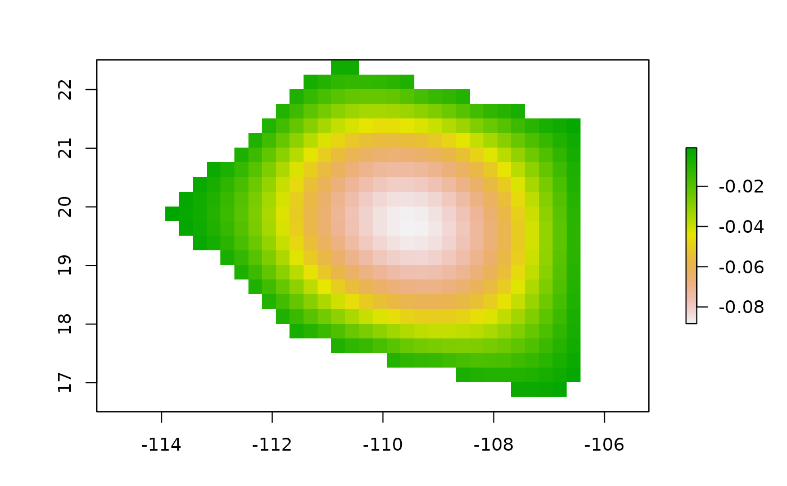

Creates an adjacency matrix of an area of interest. This could be the accessible area (M) of a species or any geographic region of interest.
Arguments
- modelsparse
A setA object returned by the function
model2sparse.- ngbs
Numeric. Number of neighbors (see details).
- eigen_sys
Logical. If TRUE the eigen analyses of the adjacency matrix will be returned.
- which_eigs
Numeric. Which eigen value and eigen vector will be returned.
Value
Returns an object of class setM with 7 slots.
The first contains the adjacency matrix. A n x n sparse matrix (n=number of
non-NA cells of the niche model) where connected cells are represented by 1.
The second slot has the adjacency list. It is a list of matrices with four
columns (FromRasCell -from cell ID of the raster-, -to cell ID of the
raster-, -from non-NA cell-, -to non-NA cell-). Other slots contain
information about initial coordinates where dispersal occurs
(initial_points), number of cells used to define the neighborhood (ngbs),
non-NA coordinates (coordinates), and a matrix of eigen vectors (eigen_vec).
Details
The model is a raster object of the area where the dispersal process will occur. The number of neighbors depends on the dispersal abilities of the species and the spatial resolution of the niche model; for example, a species's with big dispersal abilities will move throughout more than 1 km^2 per day, so the idea is to give an approximate number of moving neighbors (pixels) per unit of time. For more information about see adjacency matrices in the context of the theory of area of distribution (Soberon and Osorio-Olvera, 2022).
References
Soberón J, Osorio-Olvera L (2023). “A dynamic theory of the area of distribution.” Journal of Biogeography6, 50, 1037-1048. doi:10.1111/jbi.14587 , https://onlinelibrary.wiley.com/doi/abs/10.1111/jbi.14587. .
Examples
x_coord <- c(-106.5699, -111.3737,-113.9332,
-110.8913, -106.4262, -106.5699)
y_coord <- c(16.62661, 17.72373, 19.87618,
22.50763, 21.37728, 16.62661)
xy <- cbind(x_coord, y_coord)
p <- sp::Polygon(xy)
ps <- sp::Polygons(list(p),1)
sps <- sp::SpatialPolygons(list(ps))
mx_grid <- bamm::shape2Grid(sps,resolution = 0.25,ones = TRUE)
mx_sparse <- bamm::model2sparse(model=mx_grid, threshold = 0.1)
adj_mx <- bamm::adj_mat(modelsparse=mx_sparse,
ngbs=1,eigen_sys=TRUE,which_eigs=1)
print(adj_mx)
#> Set M of the BAM digram it contains 7 slots
#>
#> @coordinates: A matrix with longitude and latitude values of each cell of the raster area
#>
#> x y
#> [1,] -110.8082 22.38263
#> [2,] -110.5582 22.38263
#> [3,] -111.3082 22.13263
#> [4,] -111.0582 22.13263
#> [5,] -110.8082 22.13263
#> [6,] -110.5582 22.13263
#> @eigen_val: Eigen values of the connectivity matrix M
#>
#> [1] 7.879909
#> @eigen_vec: Eigen vector of the connectivity matrix M
#>
#> [,1]
#> [1,] -0.005016999
#> [2,] -0.005372111
#> [3,] -0.006135915
#> [4,] -0.009435098
#> [5,] -0.011856916
#> [6,] -0.012869369
mx_grid_eigen <- mx_grid
mx_grid_eigen[mx_sparse@cellIDs] <- adj_mx@eigen_vec
raster::plot(mx_grid_eigen)
